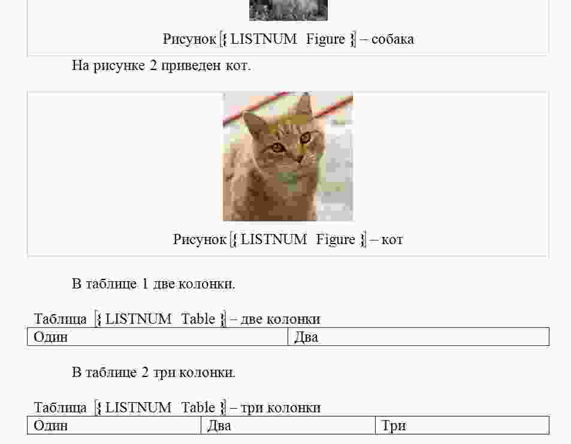
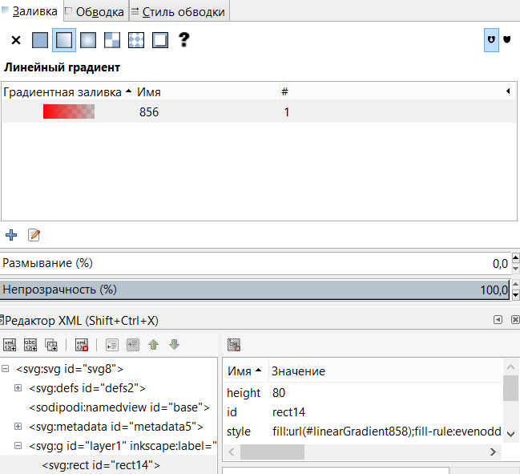
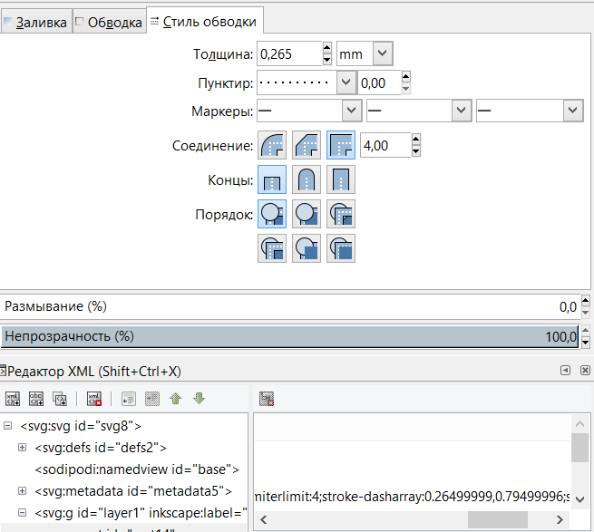

<!doctype html>
<html>
	<head>
		<meta charset="utf-8">
		<meta name="viewport" content="width=device-width, initial-scale=1.0, maximum-scale=1.0, user-scalable=no">

		<title>Графические данные</title>

		<link rel="stylesheet" href="../dist/reset.css">
		<link rel="stylesheet" href="../dist/reveal.css">
		<link rel="stylesheet" href="../dist/theme/beige.css" id="theme">

		<!-- Theme used for syntax highlighted code -->
		<link rel="stylesheet" href="../plugin/highlight/github.css" id="highlight-theme">
	</head>
	<body>
		<div class="reveal">
			<div class="slides">

                <section data-markdown data-separator="!~~~!" data-separator-vertical="~~~" > 
<script type="text/template">

## Растровые изображения

~~~

### BMP

Bitmap Picture:

- Метаданные:
  -  BITMAPFILEHEADER;
  -  BITMAPINFO;
- Пиксельные данные.

~~~

### BITMAPFILEHEADER


| Поз. | Size | Имя         | Тип   | Описание                |
| ---- | ---- | ----------- | ----- | ----------------------- |
| 00   | 2    | bfType      | WORD  | Сигнатура.              |
| 02   | 4    | bfSize      | DWORD | Размер.                 |
| 06   | 2    | bfReserved1 | WORD  | Зарезервированы         |
| 08   | 2    | bfReserved2 | WORD  |                         |
| 0A   | 4    | bfOffBits   | DWORD | Адрес пиксельных данных |

~~~

### BITMAPINFO

Имеет несколько версий.

Основные поля:

- bcSize — размер пиксельных данных;
- bcWidth — ширина;
- bcHeight — высота;
- bcBitCount - бит на пиксель;
- таблица цветов;

~~~

### Пиксельные данные


~~~

### Сжатие данных




Оригинал 113 кБ, сжатый — 21kБ.

~~~

### Рисование линий

Алгоритм Брезенхэма.


~~~

### Рисование линий

Алгоритм Ву.


~~~

### Масштабирование


!~~~!

## Векторные рисунки

~~~

### SVG (Scalable Vector Graphics)


~~~

### Кривые Безье


~~~

### Градиент



~~~

### Обводка



~~~

### Порядок прорисовки


~~~

### Фильтры


~~~

### Форматы


~~~

### Масштабирование


</script>
                </section>

			</div>
		</div>

		<script src="../dist/reveal.js"></script>
		<script src="../plugin/notes/notes.js"></script>
		<script src="../plugin/markdown/markdown.js"></script>
		<script src="../plugin/highlight/highlight.js"></script>
		<script src="../plugin/audio-slideshow/plugin.js"></script>
		<script src="../plugin/audio-slideshow/recorder.js"></script>
		<script src="../plugin/audio-slideshow/RecordRTC.js"></script>
		<script src="../plugin/menu/menu.js"></script>
		<script>
			Reveal.initialize({
				hash: true,
				plugins: [ RevealMarkdown, RevealHighlight, RevealNotes, RevealAudioSlideshow, RevealAudioRecorder, RevealMenu ],
				audio: {
					prefix: 'audio/',
 					suffix: '.webm;codecs=opus',
					autoplay: false,
					advance: -1,
				},
				menu: {
					custom: [{
						title: 'Home',
						icon: '<i class="fa fa-home">',
						src: '../menu.html'
					}]
				}
			});
		</script>
	</body>
</html>
